Myosin, intermediate filaments and the mechanical cell
Cytoskeleton
Cell Biology (3MB001)
About this lecture
The last lecture on the cytoskeleton. Actin and microtubules are tracks; today we meet the motor that pulls on actin, myosin, and the third filament system, the intermediate filaments, which makes cells strong.
After this lecture you can:
describe the myosin family and explain the cross-bridge cycle of myosin II: what ATP binding, ATP hydrolysis and phosphate release each do;
explain how a sarcomere shortens by sliding filaments, and why force depends on sarcomere length;
explain how Ca²⁺ switches contraction on through troponin and tropomyosin;
give examples of non-muscle myosin II (cell division, migration) and of myosin V as a cargo carrier;
describe how intermediate filaments are built, name the main families, and explain how they give mechanical strength;
choose a method to study the cytoskeleton: FRAP, TIRF, traction-force microscopy, optical tweezers;
explain how mavacamten treats hypertrophic cardiomyopathy and why broken keratin gives blistering skin.
ELO 6 (cytoskeleton and motility), with disease examples for ELO 9.
The question: how does a muscle shorten?
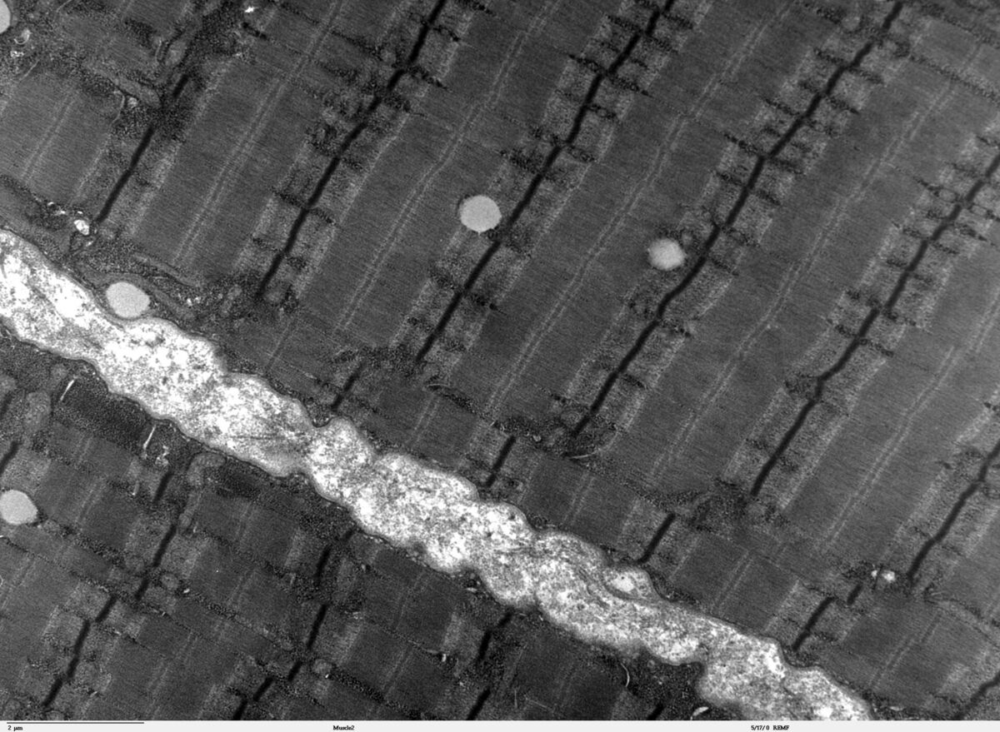
Human skeletal muscle, thin section, transmission electron microscopy. Each repeat of dark and light bands is one sarcomere, about 2.5 µm long.
Skeletal muscle is striped (striated): the same unit repeats thousands of times along each fibre.
When a muscle contracts, each unit shortens by up to a third, in milliseconds.
But no filament in the unit gets shorter. How can a structure shorten if none of its parts do?
And a second puzzle: your skin is rubbed and stretched all day, but it does not tear. What holds cells together under force?
Myosin: one motor domain, many jobs
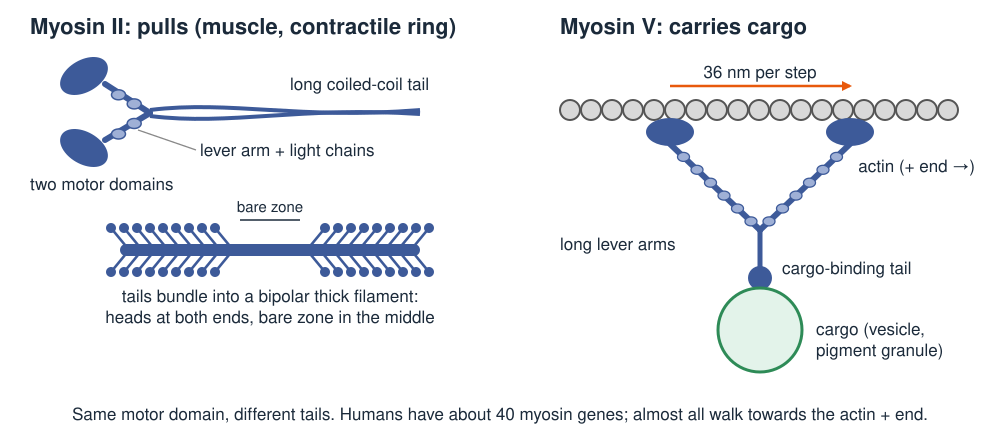
Every myosin has a motor domain that binds actin and ATP, and a lever arm that swings. The tail decides the job.
Myosin II has a long tail; many tails bundle into a thick filament with heads at both ends. It pulls actin filaments towards each other: contraction.
Myosin V has long lever arms and a tail that binds cargo; it walks along actin.
The cross-bridge cycle: ATP lets go, hydrolysis cocks, phosphate release pulls
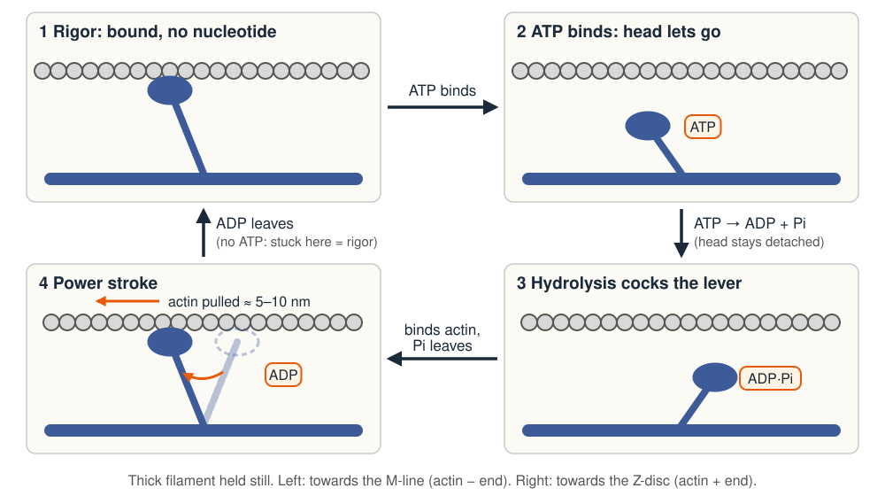
1 Without nucleotide the head is locked on actin (rigor). 2ATP binding releases the head. 3ATP hydrolysis cocks the lever (ADP·Pi stays bound). 4 The head binds actin, Pi leaves, and the lever swings: the power stroke (≈ 5–10 nm). ADP leaves, and we are back at 1.
The sarcomere: the unit of contraction
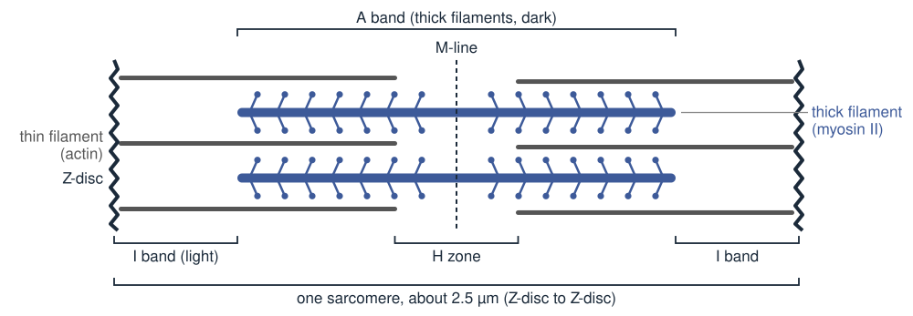
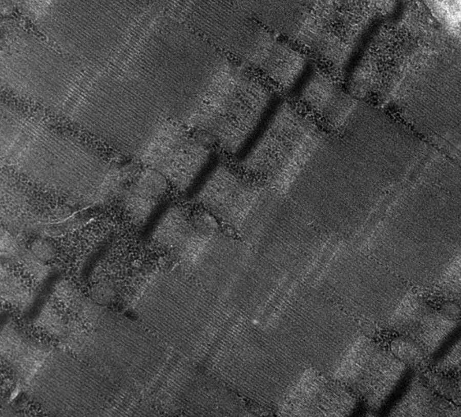
Human skeletal muscle (TEM): Z-discs (dark diagonal bars), A bands (dark), I bands (light).
Thin filaments (actin, about 1 µm) are anchored in the Z-disc with their plus ends, and point towards the middle.
Thick filaments (myosin II, 1.6 µm) sit in the middle, held at the M-line.
A band = length of the thick filaments. I band = only thin filaments. H zone = only thick filaments.
How do we know? The filaments slide
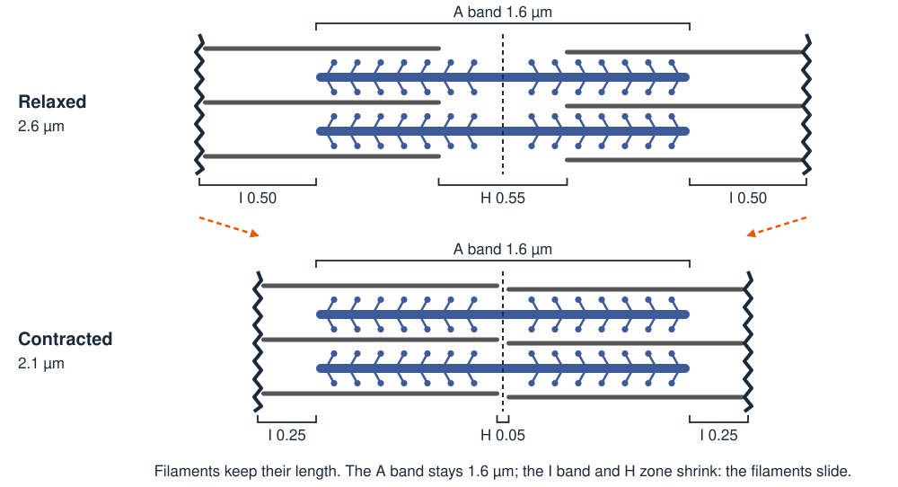
1954, two papers in the same issue of Nature: A. F. Huxley and R. Niedergerke (interference light microscopy of living fibres) and H. E. Huxley and J. Hanson (phase contrast and EM of myofibrils).
During contraction the A band keeps its length; the I band and H zone shrink. So the filaments keep their length and slide past each other: the sliding-filament model.
How do we know? Force depends on filament overlap
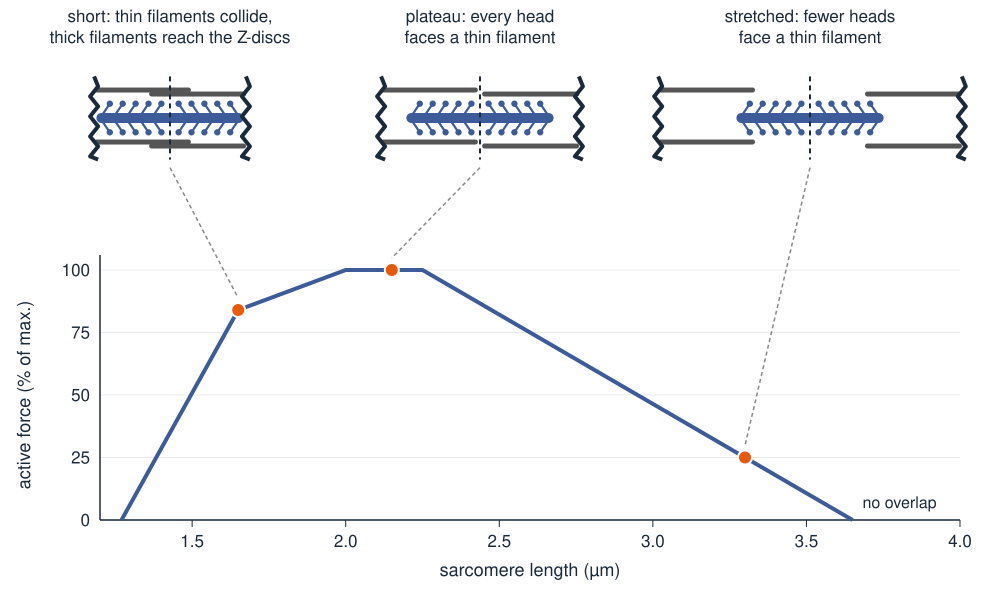
Gordon, Huxley and Julian, 1966: hold single frog muscle fibres at fixed sarcomere lengths, stimulate, measure force.
Long sarcomere: force falls in a straight line with the overlap, to zero at 3.65 µm. So force comes from the heads that face a thin filament: each cross-bridge adds a little force.
Short sarcomere: thin filaments collide, thick filaments hit the Z-discs: force falls again. Try it:Demo: sarcomere
The switch: Ca²⁺, troponin and tropomyosin
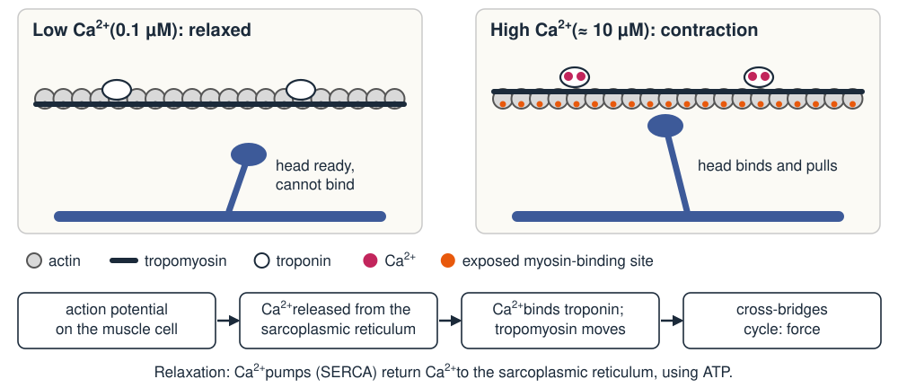
At rest, tropomyosin lies along the actin filament and covers the myosin-binding sites. Heads are cocked but cannot bind.
A nerve signal opens Ca²⁺ channels in the sarcoplasmic reticulum (the ER of muscle). Ca²⁺ rises from 0.1 µM to about 10 µM, binds troponin, and troponin pulls tropomyosin aside: heads bind and pull.
This is the Ca²⁺ signal from the ion-channels lecture. Ca²⁺ pumps (SERCA) take it back: relaxation.
Non-muscle myosin II: the cell’s own muscle
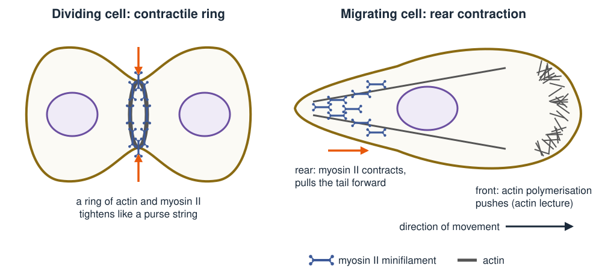
Every cell has myosin II, in small bipolar minifilaments that pull on actin.
Contractile ring in cell division: a ring of actin and myosin II pinches the cell in two (more in the mitosis lecture).
Migration: at the cell rear, myosin II contracts and pulls the tail forward, while actin polymerisation pushes the front (the actin lecture).
Switched on by phosphorylation of its light chain (by a kinase activated by Ca²⁺–calmodulin, or by Rho kinase), not by troponin.
Myosin V: a cargo carrier on actin
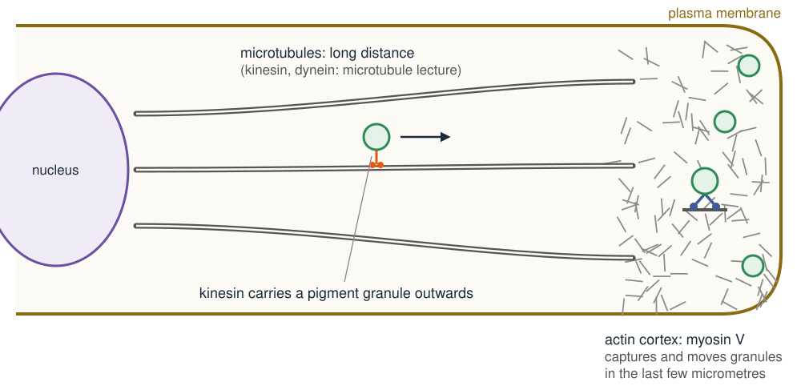
Myosin V walks hand over hand along actin, 36 nm per step, one ATP per step, for many steps before it falls off.
Long distances: microtubules and kinesin/dynein. The last few micrometres in the actin-rich cortex: myosin V.
Example: pigment cells (melanocytes) hand pigment granules to skin cells. No myosin V (Griscelli syndrome type 1): granules pile up in the cell centre, hair is silvery.
Intermediate filaments: built like a rope
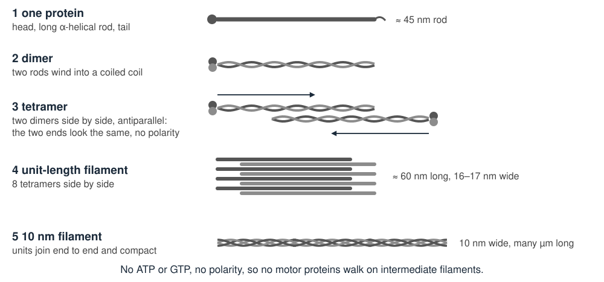
A long α-helical rod with a head and a tail. Two rods form a coiled-coil dimer; two dimers lie side by side, antiparallel, in a tetramer.
Tetramers pack side by side and end to end into a rope 10 nm thick: between actin (7 nm) and microtubules (25 nm), hence “intermediate”.
No nucleotide, no polarity, no motors. Their job is strength, not movement.
Intermediate filament families: one per tissue
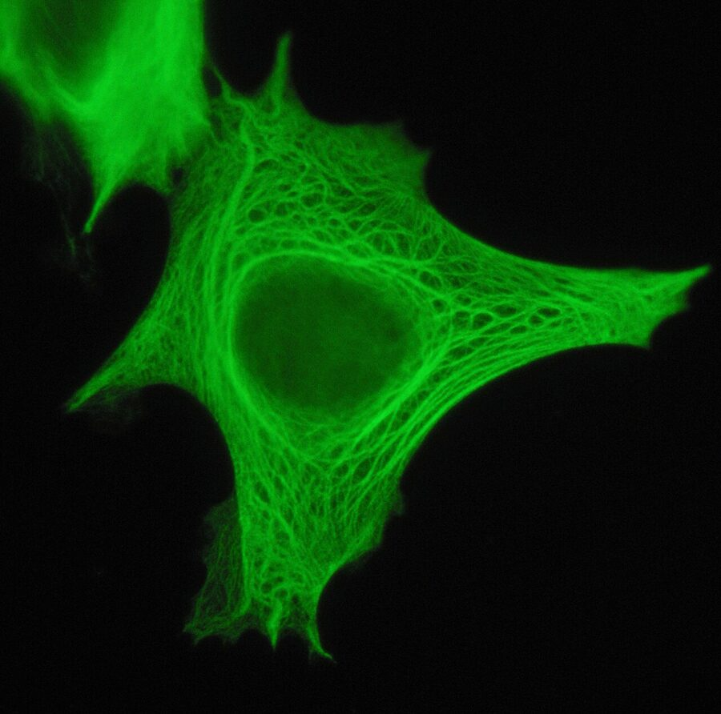
Cytokeratin filaments in a human epithelial cell (immunofluorescence). The network spans the cytoplasm around the nucleus (dark).
Family
Where
Note
Keratins (type I + II pairs)
epithelia: skin, gut, liver
the largest family, about 50 genes
Vimentin
fibroblasts, white blood cells, endothelium
Desmin
muscle
links Z-discs to each other
Neurofilaments
nerve axons
set the axon diameter
Nuclear lamins
inside the nucleus, all cells
the nuclear lamina (organelles-compared lecture)
Pathologists use the IF type to find where a tumour came from: keratin = carcinoma (epithelium), vimentin = sarcoma.
Mechanical strength: a network riveted to its neighbours
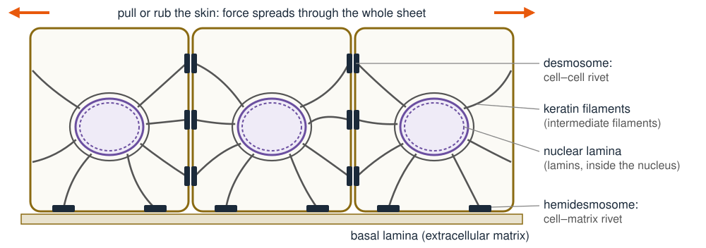
Keratin filaments end in desmosomes (rivets between cells) and hemidesmosomes (rivets to the basal lamina). The filaments of one cell are linked to those of the next: the whole sheet shares the load.
Intermediate filaments can be stretched to two or three times their length before breaking, and they get stiffer as they stretch. Actin filaments and microtubules break much earlier.
The nuclear lamina does the same for the nucleus.
How do we know? Watching filaments turn over: FRAP and TIRF
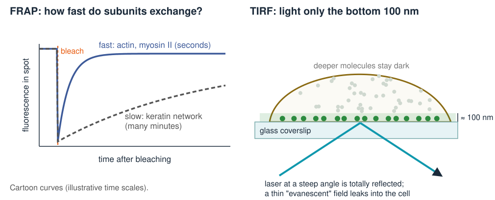
FRAP (from the membrane-structure lecture; FRAP lab): bleach a GFP-tagged filament protein in a spot, watch fluorescence return. Fast return = subunits exchange quickly (actin, myosin II); slow = a stable network (keratin).
TIRF microscopy: only a ≈ 100 nm layer above the glass is lit. Sharp images of adhesions, single motors and filaments at the bottom of a cell or in a test-tube assay, with almost no background.
How do we know? Measuring forces: traction-force microscopy and optical tweezers
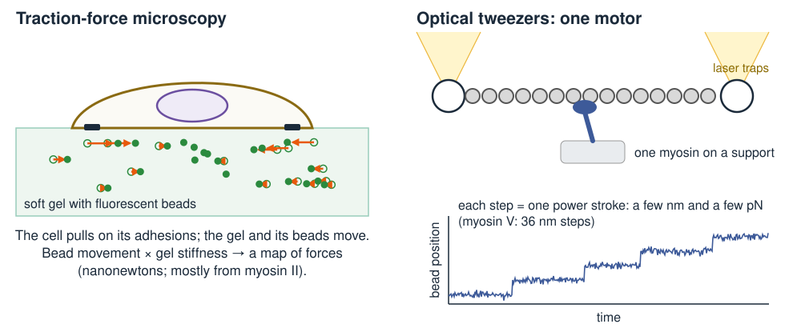
Traction-force microscopy: grow cells on a soft gel with beads. From how far the beads move and how stiff the gel is, calculate the forces each adhesion feels (nanonewtons). Block myosin II (blebbistatin) and the forces vanish.
Optical tweezers: a focused laser holds a bead like a spring. Attach an actin filament and let one myosin pull: each step is one power stroke, a few nanometres and a few piconewtons.
Why it matters: mavacamten, a drug that parks myosin heads
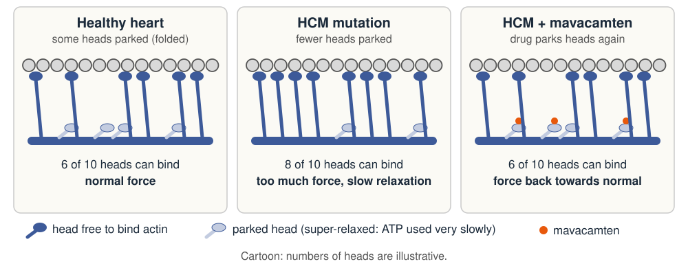
Hypertrophic cardiomyopathy (HCM): about 1 in 500 people. Often a mutation in cardiac myosin (MYH7) or a myosin-binding protein. Fewer heads are parked, so too many cross-bridges cycle: the heart pulls too hard, relaxes poorly, and its wall thickens.
Mavacamten (approved 2022) binds the myosin motor domain, slows its ATPase and parks heads: fewer cross-bridges (back to the cycle slide). Too high a dose weakens the heart, so the dose is adjusted with ultrasound.
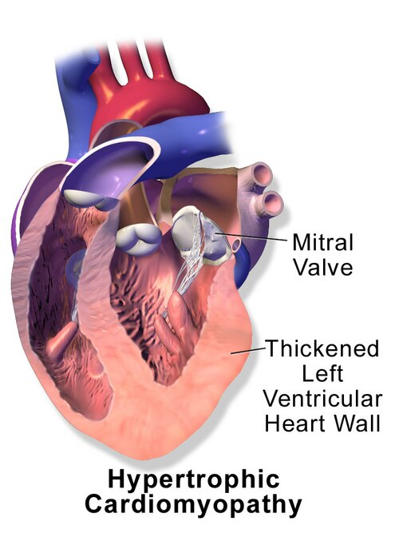
Hypertrophic cardiomyopathy: the wall of the left ventricle is thickened (illustration).
Why it matters: epidermolysis bullosa simplex, when keratin breaks
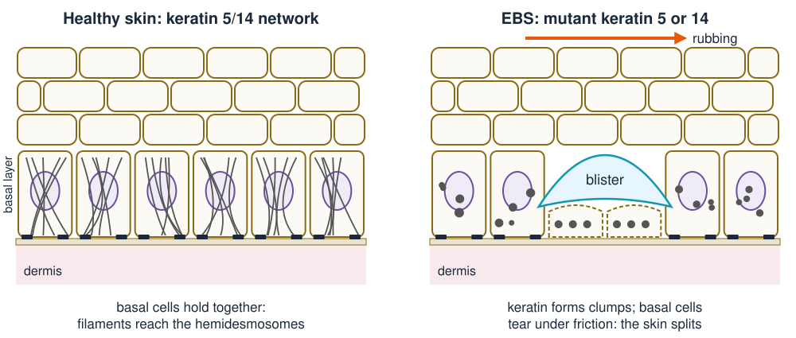
Mutations in keratin 5 or 14, the keratin pair of the basal layer of the skin. Usually dominant: the mutant protein poisons the filament it joins.
Keratin forms clumps instead of a network. Basal cells tear under friction, and the skin above lifts off as a blister.
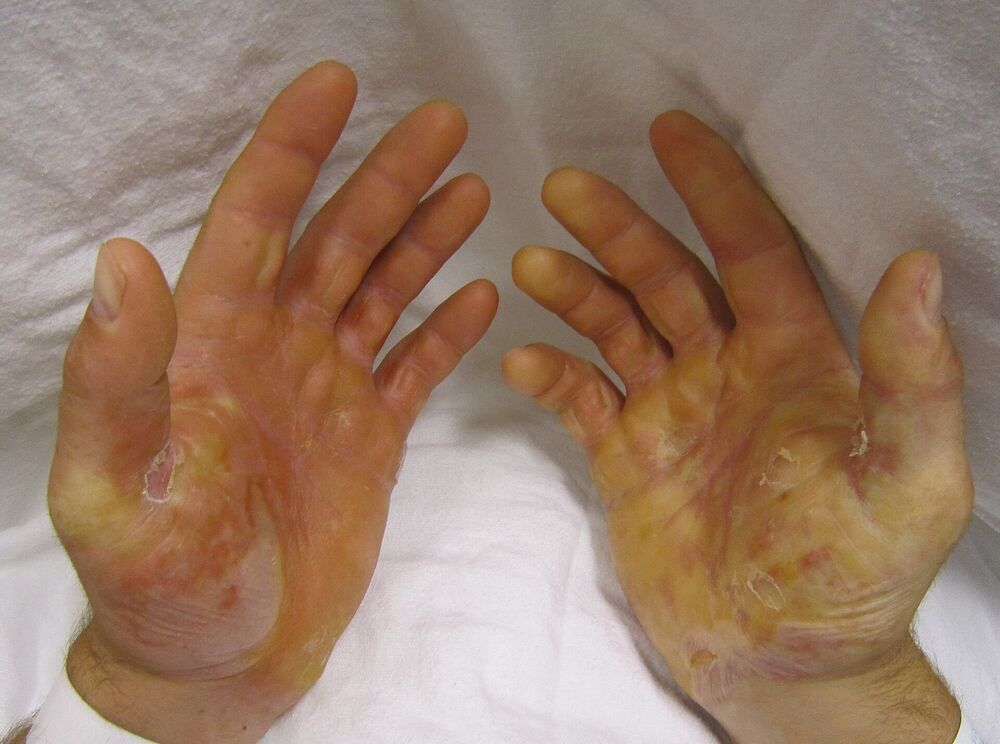
Blisters on the hands of a person with epidermolysis bullosa simplex.
Summary
Myosins share a motor domain that binds actin and ATP; the tail decides the job. Myosin II pulls (muscle, contractile ring, cell rear); myosin V carries cargo.
Cross-bridge cycle: ATP binding releases the head, hydrolysis cocks the lever, Pi release gives the power stroke. No ATP = rigor.
In the sarcomere, thick and thin filaments slide; force follows filament overlap (length–tension curve). Ca²⁺ on troponin moves tropomyosin and switches contraction on.
Intermediate filaments (keratins, vimentin, desmin, neurofilaments, lamins) are non-polar ropes that, linked by desmosomes and hemidesmosomes, give cells and tissues mechanical strength.
Methods: FRAP, TIRF, traction-force microscopy, optical tweezers. Disease and drugs: mavacamten parks myosin heads in HCM; mutant keratin 5/14 gives blistering skin (EBS).
Read more (optional): Alberts et al., Molecular Biology of the Cell, 7th ed., ch. 16.